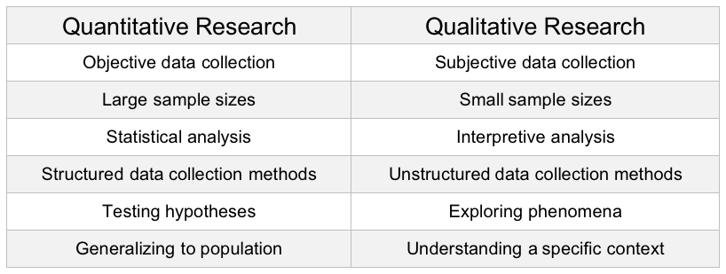

Back to Blog Home
Back to Blog Home
Comparing Quantitative and Qualitative Research Methods
When it comes to research methodologies, quantitative and qualitative research are the two most widely used approaches. While both aim to answer research questions, they differ significantly in their methods, data collection, and analysis techniques. This article provides an overview of the key differences between quantitative research and qualitative research.
Quantitative Research
Quantitative research is a method of collecting and analyzing numerical data using statistical methods. It involves the use of structured, standardized surveys or experiments to gather data from a large number of participants. This type of research is often used to establish cause-and-effect relationships and test hypotheses. Key features of quantitative research include:
1. Objective data collection: Quantitative research is characterized by the use of objective, standardized, and structured data collection methods, such as surveys or experiments. This ensures that the data collected is consistent and reliable.
2. Large sample sizes: Quantitative research often involves collecting data from a large number of participants to ensure statistical significance. The sample size is determined based on statistical power calculations to ensure that the study is adequately powered to detect meaningful differences between groups.
3. Statistical analysis: Quantitative research involves the use of statistical methods to analyze data. These methods can be used to test relationships between variables, identify patterns in data, and make predictions based on data.
Qualitative Research
Qualitative research is a method of collecting and analyzing non-numerical data using techniques such as interviews, focus groups, and observation. It involves the collection of data in naturalistic settings to gain an in-depth understanding of a phenomenon. Key features of qualitative research include:
1. Subjective data collection: Qualitative research is characterized by the use of subjective data collection methods, such as interviews, focus groups, and observation. This allows researchers to gain a more in-depth understanding of participants' experiences and perspectives.
2. Small sample sizes: Qualitative research often involves collecting data from a small number of participants to gain a deeper understanding of their experiences. The sample size is determined based on the research question and the data saturation point.
3.Interpretive analysis: Qualitative research involves the use of interpretive analysis methods to analyze data. These methods can be used to identify themes, patterns, and relationships in data, as well as to develop new theories based on data.
Comparison
Quantitative research and qualitative research differ in several ways. The following table summarizes the key differences between the two approaches:

When to Use Each Approach
The choice between quantitative research and qualitative research depends on various factors, such as the research question, the type of data needed, and the resources available. Quantitative research is typically used when the research question requires measuring the prevalence of a phenomenon or testing hypotheses. Qualitative research is used when the research question requires understanding the nuances and complexities of a phenomenon.
Conclusion
Quantitative research and qualitative research are two distinct approaches in research methodology. While quantitative research involves the use of numerical data and statistical analysis to test hypotheses and establish cause-and-effect relationships, qualitative research uses non-numerical data and interpretive analysis to explore the complexities of a phenomenon. The choice between the two approaches depends on the research question, the type of data needed, and the resources available. Ultimately, the aim of both approaches is to answer research questions and contribute to a broader understanding of a phenomenon.